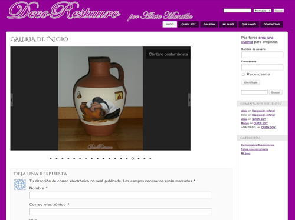

Hola. Mi nombre es José Antonio, soy un desarrollador web front-end y apasionado de la informática en general. En este sitio web podrás conocer algunos de mis trabajos, mis estudios y mi experiencia profesional.
Portafolio personal expresamente diseñado y creado para poner a prueba mis capacidades. Toda la edición y creación del mismo corre de mi cuenta, utilizando las últimas tecnologías disponibles a mi alcance.
En el desarrollo del sitio web se ha utilizado la plantilla HTML5 Boilerplate, efectos en jQuery para aumentar el dinamismo del sitio y código CSS3 con el uso de LESS para mejorar el aspecto visual.
Sitio web para buscar y obtener información de los alojamientos juveniles de la comunidad de Castilla y León. Este es un proyecto realizado en colaboración con unos compañeros de estudios.
Mi función en el proyecto se centró en la programación JavaScript, jQuery, Ajax y PHP.
Portafolio personal diseño para Carolina Hernández Pina, una amiga arquitecta técnica. El portafolio utiliza una plantilla HTML5 y CSS3 denominada Miniport responsive.
Sitio web personal de Alicia Mansilla Fermoso, una restauradora que trabaja en solitario. El sitio web está desarrollado en Wordpress. Ya sabeis, si teneis algún mueble u obra de arte que necesiteis restaurar o bien quereis decorar algo, no dudeis en contactar con ella.
Diseño web
Poseo unas elevadas capacidades de escritura en el lenguaje de marcas frontend de las páginas web, tanto en modalidad html como xhtml. Siempre trato de realizar marcados acordes a los estándares a la vez que limpios y claros. No dejo de reciclarme y por lo tanto estoy preparado para (x)html5; este sitio web es una prueba de ello. Tanto css como javascript son complementos básicos de (x)html y también mantengo un buen dominio de ambos. Por supuesto tengo habilidad en utilizar la biblioteca jQuery para javascript así como ajax para conseguir que los sitios web se vuelvan mucho más dinámicos. Tengo conocimientos bastante elevados sobre php, lenguaje en el que he realizado algunos proyectos particulares. He trabajado con asp clásico desarrollando varios sitios web. Lo mismo ocurre con python, lenguaje en el que he desarrollado varios proyectos utilizando el framework Django. Las consultas sql no son ningún problema para mi, desde MySQL, Oracle hasta pl/sql, ya sea tratando con datos o creando bases de datos. He realizado proyectos en diversos sistemas de gestión de contenidos, especialmente tengo habilidad con moodle, con el que he impartido un curso en formación a distancia, social engine, con el que he desarrollado una pequeña red social y wordpress (con el que trabajé en la Confederación Vallisoletana de Empresarios como parte de mi formación profesional)
Estudios
Poseo el título de técnico superior en administración de sistemas informáticos y redes, obtenido en el año 2012 con una nota media de 8.85. Realicé la formación en centros de trabajo en la Fundación General de la Universidad de Valladolid. Poseo el título de técnico en explotación de sistemas informáticos, obtenido en el año 2010 con una nota media de 9.60 y menciones honoríficas en los módulos de Instalación y mantenimiento de servicios de internet e instalación y mantenimiento de equipos y sistemas informáticos. Realicé la formación en centros de trabajo en la Confederación Vallisoletana de Empresarios. Actualmente me encuentro cursando el segundo año para obtener el título de técnico superior en Desarrollo de Aplicaciones Web en el centro Ies Galileo de Valladolid. Actualmente me encuentro cursando el segundo año para obtener el título de técnico superior en Desarrollo de Aplicaciones Multiplataforma en el centro Ies Ribera de Vasilla de Valladolid.